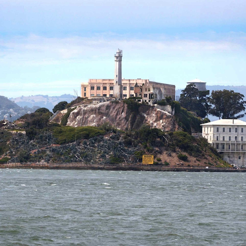

SAN FRANCISCO

Alcatraz
Pier 33
San Francisco’s charm is unforgettable. From the boats at Pier 39 to the haunting silence of Alcatraz Island, every corner tells a story. The fog drifting over the bay made the view feel mysterious — like the city was hiding its secrets just beyond the water.